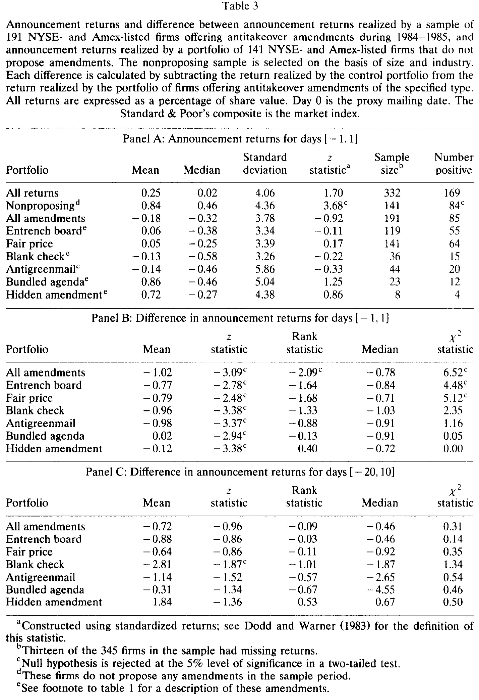
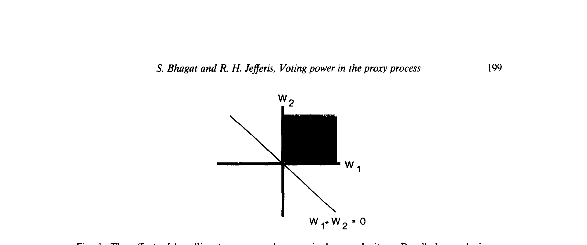
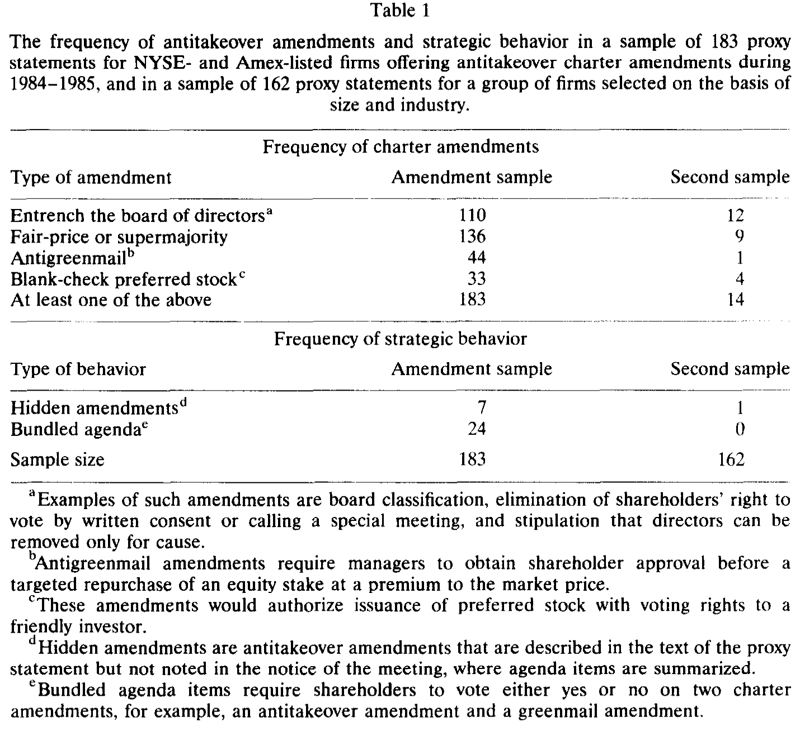
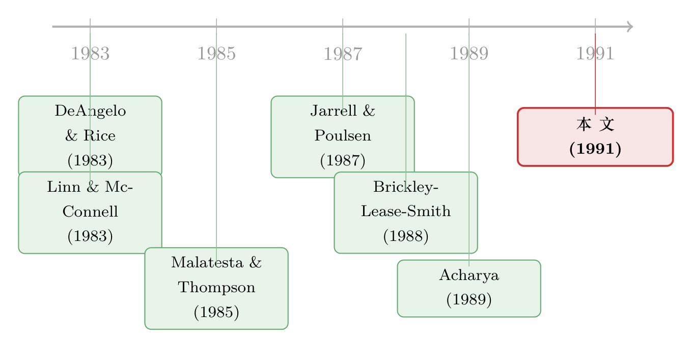

市场为什么对「反收购条款」无动于衷？——因为它早就猜到了
本文读的是 Bhagat & Jefferis (1991, Journal of Financial Economics)：管理层发起的反收购章程修正案，是否被采纳，取决于公司的股权结构——这意味着「采纳」是可以被市场预期的。一旦事件被预期，公告期收益就不再是财富效应的无偏估计。作者用一个校正了「预期偏误」的估计量，把被衰减掉的那部分捞了回来，发现反收购条款的通过，对应着 约 −1% 的、统计上显著的股东财富损失。而决定一家公司会不会通过这类条款的关键，是 CEO 的持股与员工持股计划（ESOP）的投票权。
1 一个量不出来的「坏东西」
先说一个让人别扭的事实。
反收购章程修正案（antitakeover charter amendment），俗称「鲨鱼驱逐剂」，在直觉上是个再清楚不过的坏东西：它把管理层从收购市场的纪律里解放出来，让外部人更难夺取控制权。机构投资者反对它，公司内部人支持它——Brickley、Lease 和 Smith (1988) 用投票数据把这一点钉得很死。一个朴素的推论是：这种条款保护了经理、伤害了股东。
可是，当人们真的拿事件研究去量它对股价的冲击时，得到的却是一片暧昧。从 DeAngelo 和 Rice (1983) 到 Linn 和 McConnell (1983)，点估计在「略微为负」和「略微为正」之间来回晃，几乎没有一个能稳稳地拒绝「零效应」。Jarrell 和 Poulsen (1987) 把窗口拉长到 31 天，才在某些类型上看到显著为负的效应；窗口一短，显著性又没了。
于是我们被卡在一个尴尬的位置：一边是「它显然在伤害股东」的故事，一边是「市场看上去毫不在乎」的数据。更要命的是，股东自己——那些理应被伤害的人——投票通过了其中绝大多数提案。Brickley、Lease 和 Smith (1988) 报告，样本里 95% 的管理层提案最终都被股东批准。
如果反收购真的是坏事，那么有两个问题必须同时回答：第一，它到底有没有让股东实实在在地掉了钱？第二，既然掉了钱，股东为什么还举手赞成？
这篇 1991 年的论文，正是冲着这两个问题去的。而它最漂亮的地方在于：它先没有去问「市场到底怎么了」，而是回过头来问——会不会是我们的尺子坏了？
2 真正关键的一步：这件事，市场早就猜到了
尺子怎么会坏？
事件研究的全部前提，是「事件是个意外」。只有当一条信息出乎市场意料时，价格才会在它公布的那一刻跳一下，而这一跳的幅度，才能用来度量这条信息的价值。可一旦事件是可以被预期的，公布那天的跳动就只剩下「意外的那一小部分」——剩下的早就提前被价格慢慢吸收了。
接着，一个自然的问题是：一家公司「会不会通过反收购条款」，到底是不是可预测的？
作者的回答是肯定的，而且给出了理由：采纳与否，强烈地取决于股权结构。董事会上有代表的各方对结果有很强的影响力，CEO 的持股、ESOP 的投票权尤其举足轻重。换句话说，只要你看得见一家公司的股权结构，你就能在相当程度上提前押注它会不会出这类提案。市场当然也看得见。
这就是 部分预期事件（partially anticipated events）的问题——Malatesta 和 Thompson (1985) 早已正式地刻画过它。它的含义是致命的：如果市场事前给「采纳」赋了一个概率 π，那么真正在公告日兑现的，只有 (1−π) 倍的真实效应。被预期得越充分（π 越大），公告日的反应就被压得越扁。这恰恰解释了为什么前人量到的效应总是「显著地接近于零」——不是没有效应，是效应被预期吃掉了。
（关于事件研究里这种「尺子被悄悄改写」的隐患，也可参见《你的 t 值在撒谎：当事件本身把方差吹大了》。）
3 反转：从「没通过」的公司里把信息捞回来
光是指出「被衰减了」还不够——你还得有办法把被衰减掉的那部分还原出来。这里就是全文最精巧的一步。
作者的思路是：既然采纳是被预期的，那么那些「本该通过、却没有通过」的公司，身上也带着信息。设想一家公司，市场事前判断它有较高概率 π 会出反收购条款，并已经把这份「坏预期」按 π·δ 压进了股价（δ 是采纳的真实财富效应，若反收购伤害股东则 δ<0）。如今它公布的代理材料里没有这类条款——坏事落了空。那么它的股价该怎么动？应该往上跳 −π·δ；既然 δ<0，这就是一个正的收益。
把这套逻辑写下来，就是（沿用 Malatesta–Thompson 的部分预期事件框架）：
这套逻辑的美感在于：你不必精确地估出每家公司的 π，只要把提案公司的收益和配对的、未提案公司的收益相减，预期的成分就被一笔勾销，剩下的差额直接就是真实的财富效应 δ。
现在回到数据。先看那张最关键的表（如表 3 所示）：在 [−1, 1] 的窗口里，提案了反收购条款的 191 家公司，公告期平均收益是 −0.18%，z 值 −0.92——果然不显著，和前人一样暧昧。可对照组那 141 家完全没有提案任何条款的公司，却实现了 +0.84% 的平均收益，并且在 1% 水平上显著（z = 3.68）。这个正收益不是噪声，它正是「坏事没发生」吐出来的那一口气。

Table 3
把两边一减，反转就出现了：所有反收购条款相对于对照组的收益差是 −1.02%，z 值 −3.09，在 1% 水平上显著为负；非参数的秩检验和中位数检验也都拒绝「两组表现相同」。而且这个结论在各类条款上高度一致——巩固董事会（entrench board）−0.77%、公平价格（fair price）−0.79%、空白支票优先股（blank check）−0.96%、反绿票讹诈（antigreenmail）−0.98%，无一例外地为负且显著。
于是第一个问题有了答案：反收购条款确实让股东掉了约 1% 的钱。 之所以前人量不出来，是因为他们只盯着提案公司那条被预期压扁的收益，而忽略了对照公司收益里藏着的另一半信息——这也提示，早年那些研究可能都受了样本选择偏误（sample-selection bias）的污染。
4 这种差别是「真」的吗？——样本之外的检验
聪明的读者立刻会问：提案公司和不提案公司，会不会本来就是两种不同的公司？这种差别会不会只是样本期内的偶然？
作者用样本期之外的经历来回应。他们追踪了所有样本公司在 1984–1985 之后两年里的反收购动作（数据来自 Investor Responsibility Research Center 1987 的调查与《华尔街日报》索引）。结果很干净：在 1984 年之前，提案公司与不提案公司在「此前是否已采纳反收购条款」上没有显著差别（X² = 0.00）；但到 1987 年底，提案样本里有 197 家最终装上了某种反收购条款，对照样本只有 46 家，差异巨大（X² = 192.76，1% 显著）。限制在财富 500 强子样本里，结论同样成立（84 对 31，X² = 42.93）。
换句话说，这两组公司确实是质的不同，而样本期内观察到的差异并不是「时点凑巧」造成的——某些公司对反收购条款有着持久的「免疫力」，而这种免疫力，正与它们的股权结构相吻合。（关于股权结构如何驯服一家公司的治理，可对照《把『投票权』和『钱』拆开来卖：员工持股计划里的一道控制权暗账》。）
5 谁说了算：投票权的地图
既然采纳与否取决于股权结构，那么 π 本身就该被建模。作者把「一家公司是否提案反收购条款」当作一个离散选择问题，用公司的所有权与投票权变量去解释它的概率（并在估计中处理了基于选择的抽样问题——这是 Manski–Lerman (1977)、Cosslett (1981) 一脉的技术）。
落到经济含义上，结论清晰得出人意料：在董事会上有代表的各方，对结果有强烈影响；CEO 的持股与 ESOP 的投票权扮演了尤其突出的角色。 反过来，机构投资者——他们通常不进董事会——的存在，对采纳与否几乎没有影响，只有微弱的证据显示机构大股东能起一点阻吓作用。
这幅「投票权地图」本身是直觉的：能把条款推过去的，是那些既坐在董事会上、又攥着选票的人。ESOP 之所以重要，是因为它把员工手里的投票权交到了管理层友好的受托人手中——这与 Gordon 和 Pound (1990) 关于 ESOP 与公司控制的研究遥相呼应。
6 但股东为什么举手赞成？——两种「策略性行为」
可投票权地图解决不了第二个、也是更扎心的问题：如果这是坏事，为什么 95% 的提案都被股东批准了？
作者的回答是：因为管理层不只是被动地依赖手里的票，他们还会主动地操纵议程。论文记录了两种策略性行为。
第一种是「捆绑」（bundling）。 管理层把一个股东大概率会喜欢的提案，和一个股东大概率会厌恶的提案，打包成一个议程项，逼股东对两者一起投「赞成」或「反对」。论文用反绿票讹诈条款来演示这一点：如果反绿票条款本身能吸引那些反对反收购的股东，那么把它和反收购捆在一起，就可能让一个本会被否决的反收购条款蒙混过关。
这背后是一个干净的几何（如图 1 所示）。设两个提案的财富效应分别为 w₁ 和 w₂。若分开投票，只有当 w₁ > 0 且 w₂ > 0 时两者才都通过——对应图中那块阴影区域。可一旦打包，股东只要在 w₁ + w₂ > 0 时就会一并批准。捆绑的「边际战果」，正是 w₁ + w₂ = 0 这条线右侧、阴影之外的那一大片半平面：那里 w₂ < 0（反收购伤害股东），却因为 w₁ 足够大的正效应而被一起放行。

Figure 1: The effect of bundling two proposals as a single agenda item. Bundled agenda items
这给出了一个可检验的联合假设：反绿票条款的正财富效应，其绝对值要大于反收购条款的负效应，捆绑才能诱使股东接受一个本会被拒绝的反收购条款。
第二种是「隐藏」（hidden amendments）。 这些反收购条款写在代理声明的正文里，却不写进会议通知——也就是议程摘要里。只读摘要的股东，根本不知道自己在为什么投票。论文举的 Diamond Shamrock（1985 年 4 月 12 日）那份代理声明是个绝佳例子：议程项写着「……以遏制绿票讹诈及其他自我交易」，可翻开正文才发现，所谓「自我交易」涵盖了任何持股超过 5% 的股东参与的合并、重组，而股东被要求批准的「遏制」手段，实质是对该大股东的剥夺投票权。
两种行为有重要区别：捆绑的项目写在议程摘要里，因此对读摘要的股东是可见的，它的有效性依赖于「管理层控制议程、且手里有值钱的东西可以搭售」；而隐藏条款依赖的是不知情的股东。但在一个没有信息成本、没有交易成本的世界里，两者都不该奏效——它们的存在本身，就是市场摩擦的证据。
这里作者给出了全文最克制、也最有想象力的一句猜想：策略性行为，可能是投票权的「替代品」。手里票不够的管理层，更可能去玩捆绑和隐藏的把戏。两种逻辑——硬实力（投票权）与软手段（议程操纵）——在「让一个损害股东的条款通过」这件事上殊途同归。
让我们先看看这些条款与策略行为在样本里到底有多普遍（如表 1 所示）：183 家提案公司里，巩固董事会类条款出现 110 次、公平价格/超级多数 136 次、反绿票讹诈 44 次、空白支票优先股 33 次；而隐藏条款 7 例、捆绑议程 24 例。对照的 162 家公司里，这些几乎不出现。

Table 1
7 文献脉络
把这条线索捋一捋，会看到一个研究领域如何从「测量」走向「识别」。
最早的一拨工作——DeAngelo 和 Rice (1983)、Linn 和 McConnell (1983)——奠定了「用事件研究测反收购条款财富效应」的范式，却也撞上了那堵「效应近似为零」的墙。Jarrell 和 Poulsen (1987) 用更大的样本、更长的窗口推进了一步，并贡献了本文赖以构建样本的那批数据。与此同时，Brickley、Lease 和 Smith (1988) 从投票数据切入，把「谁支持、谁反对」刻画清楚，为「股权结构决定采纳」埋下了伏笔。
真正的方法论转折来自另一条河流：Malatesta 和 Thompson (1985) 正式提出了「部分预期事件」的框架，Acharya (1989) 则进一步发展了在外部人事前信息下度量股价效应的工具。本文的贡献，正是把这条计量学的暗线，接到了反收购这个具体的经济问题上——用预期校正的估计量、并借助对照公司的收益，第一次把那 −1% 从「预期」的迷雾里识别出来；同时把「投票权 + 策略性行为」作为「股东为何赞成损害自己的条款」的解释。

它在这张地图上的位置，是一个「方法救活了问题」的节点：不是发现了新数据，而是换了一把不会被预期糊弄的尺子。这也与同一作者后来在《一场被「外人」点燃的股东起义：1989 年霍尼韦尔的代理权之争》里继续追问的「代理过程中的投票权」一脉相承。
8 评论与延伸（Q&A + 研究方向）
(a) 几个可能的疑问
Q：「相对于对照组的收益差 = 真实财富效应」这个等式，凭什么成立？
凭一个会计恒等：提案公司的收益是
(1−π)δ，被预期衰减；对照公司的收益是−πδ，是坏预期落空后的反弹。两者相减，π恰好消掉，剩下δ。前提是两组公司面对的是同一个δ与可比的π——这正是为什么作者要按规模与行业（三位 SIC + 最接近的股权市值）精心配对对照组。
Q：对照公司那 +0.84% 的正收益，会不会只是「规模/行业组合本来就在涨」？
这是最该担心的点。作者的部分回应是：用 S&P 综合指数和 CRSP 等权指数分别做市场模型，结论一致；而且收益是相对于市场模型的异常收益，不是裸收益。但「未提案」本身是个事后才知道的状态，对照组里 14 家其实也提了案——这意味着分组本身带着内生性，下面会再谈。
Q：既然采纳能被预测，为什么不直接用预测概率 π 去做加权校正，反而绕道用对照组？
因为直接估
π要依赖一个正确设定的选择模型，模型错了，校正也错。用「提案 − 未提案」的收益差，好处是把π整体消掉，对π的具体形式不敏感——这是一种更稳健的识别。代价是它要求对照组在「除采纳外的一切」上都可比。
Q：−1% 算大还是算小？
看跟谁比。它在统计上稳稳显著，且跨条款类型一致，这本身就推翻了「市场不在乎」的旧印象。但 1% 的量级也提醒我们：反收购条款不是什么吞噬巨额价值的灾难，而是一笔不大、却真实、且被股东在投票中「默许」了的损失——这恰恰让「股东为何赞成」的谜题更尖锐。
Q：捆绑与隐藏，论文真的「证明」了它们损害股东吗？
没有。作者诚实地承认，数据不支持对这两种行为做财富效应的直接检验。他们能做的，是显示从事这些行为的公司，其董事会结构与「策略性行为是投票权替代品」的猜想相符。这是一个有说服力的间接证据，而非因果证明。
Q：机构投资者「几乎没影响」，和大家的直觉相反，怎么理解？
关键在于「是否进董事会」。机构通常不在董事会上，因而拿不到决定议程的杠杆；只有当机构是大股东（blockholder）时，才有微弱的阻吓作用。这与「投票权地图」是一致的：真正说了算的，是既持股、又坐在桌前的人。
(b) 几个可能的研究问题与提案
1. 把「预期校正」搬到公司债与信用市场。
【经济故事】反收购条款不只影响股东，也改变债权人的处境（管理层壕沟既可能保护债权人免于被掠夺式收购，也可能加剧代理冲突）。债券市场对「被预期的治理事件」同样会提前定价，因此债券的公告期利差也被预期衰减。
【可行性】中。需要 TRACE 级别的公司债成交数据 + 治理事件时点，用「提案 vs 配对未提案发行人」的利差差分来识别。难点在于债券流动性低、定价噪声大，且债与股的 π 未必相同。
2. 外资持有人是「策略性行为」的天然克星吗？ 【经济故事】捆绑与隐藏依赖股东的不知情或议程被控制。外资机构往往更依赖正式披露、更难被「藏在正文里的条款」蒙过去，因此外资持股高的公司，隐藏型条款应当更少、或更易被否决。 【可行性】中。需要跨国的股权结构数据（如 FactSet/Orbis）+ 各国代理材料的文本。识别可借助指数纳入带来的外资持股外生变动。诚实地说，议程操纵的细粒度文本编码是主要工程瓶颈。
3. 用现代文本方法重新「数」隐藏条款。 【经济故事】本文里「隐藏」是人工逐份阅读 363 份代理声明判定的。如今可以用 NLP 比对「会议通知摘要」与「正文条款」的差集，自动度量一家公司有多少治理变更被「埋」在了正文里——这本身就是一个新的治理透明度指标。 【可行性】高。EDGAR 上 DEF 14A 全文可得，摘要—正文比对是可操作的文本任务。可与后续的股东投票通过率、诉讼、收购溢价等结果变量挂钩。
4. 把「投票权 vs 策略行为」的替代关系做成因果检验。 【经济故事】本文猜想：投票权不足的管理层更爱玩捆绑/隐藏。若能找到一个外生改变管理层投票权的冲击（如 ESOP 设立、双层股权改革、反收购州法），就能检验策略性行为是否随之此消彼长。 【可行性】中。需要 ESOP 设立时点或州级反收购法的交错实施作为冲击，用交错双重差分。要当心近年文献对交错 DiD 的警告（参见《当「更稳健」的设计悄悄把符号弄反了——重读交错双重差分》）。
9 参考文献
我的判断：这篇论文的真正贡献，不在于「又量了一次反收购条款」，而在于它指出了整个测量框架被预期偏误污染这件事，并给出了一个不依赖精确估 π 的、稳健的识别办法——用对照组收益里那口「坏事没发生」的正气，去校正提案组里被压扁的负效应。它把样本选择/部分预期事件的计量思想，干净利落地接到了一个具体而重要的治理问题上，这种「换尺子救问题」的手艺，至今仍值得学习。
对识别的担忧也很实在：其一，「未提案」是一个事后状态，分组本身带内生性，对照组的可比性全押在规模—行业配对上；其二，−1% 的稳健性虽好，但样本只有 1984–1985 两年、几百家公司，时段特殊（反收购浪潮高峰），外推要谨慎；其三，捆绑与隐藏的财富效应始终是间接推断，缺一个干净的因果。
后续我最想看到的，是把这套「预期校正 + 对照组」的思路，用现代的高频债券数据和自动化的代理文本，搬到信用市场与跨国样本里去——尤其是检验外资持有人是否真的能压制议程操纵。那会是这条三十多年前埋下的暗线，最自然的延伸。